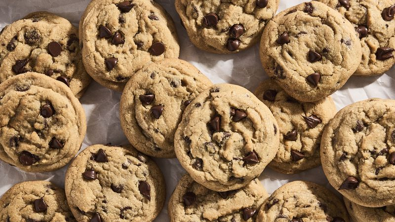

Here is the recipe for the best chocolate chip cookies!

Click here to watch the recipe on youtube!
| Amount Per Serving | |
|---|---|
| Calories | 148 |
Total Fat
| 7.4g --- 9% |
| Cholesterol | 0mg --- 0% |
| Sodium | 93 mg --- 4% |
| Total Carbohydrates | 20g --- 7% |
| Protein | 1.5g |
| Vitamin D | 0mcg --- 0% |
| Calcium | 6.3mg --- 0% |
| Iron | 1.7mg --- 9% |
| Potassium | 51.3mg --- 1% |
| Caffeine | 3.3mg |